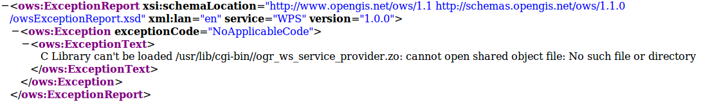
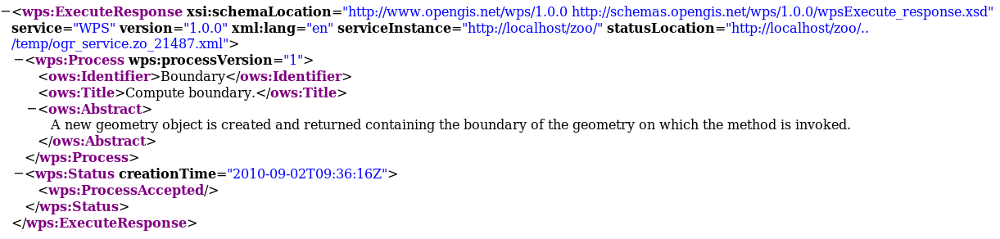
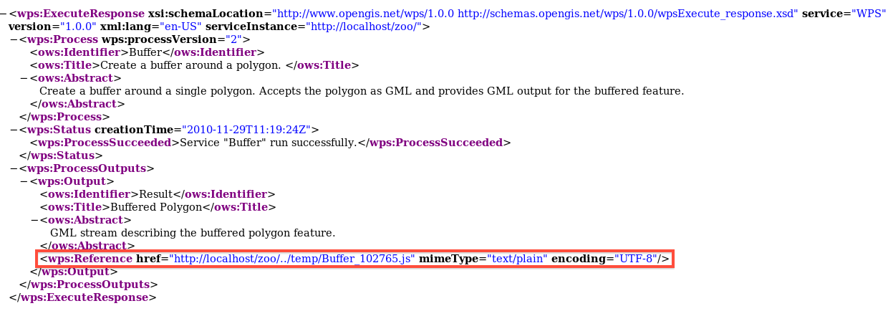
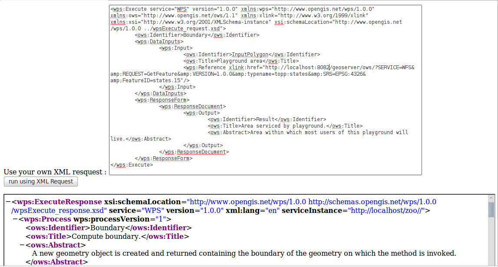
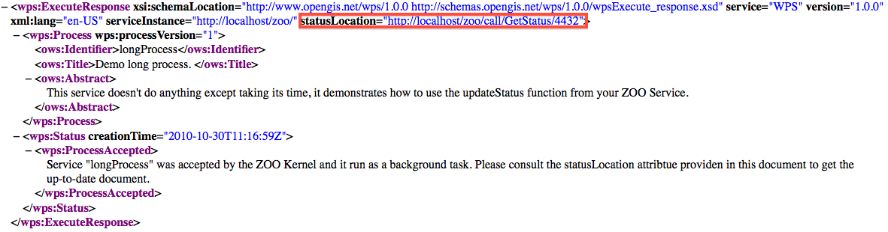
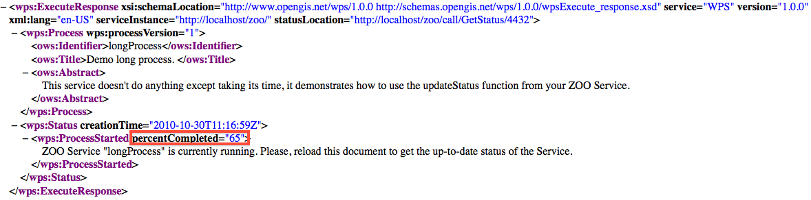

Creating OGR based Web Services¶
Introduction¶
In this part, we are going to create a ZOO ServicesProvider containing several Services based on the OGR C API or on the OGR Python module, which have also been placed in the ZOO installation on OSGeoLive. The intended goal is to use OGR and its GEOS based simple spatial functions as WPS Services.
We will first start with the Boundary spatial function, which will be explained, codded and tested gradually as a ZOO Service. The same procedure will then be used to enable the Buffer, Centroid and Convex Hull functions. Once done, some multiple geometries processes such as Intersection, Union, Difference and Symetric Difference will be implemented through an exercise at the end of the workshop.
As already said in the introduction, you have the choice to code your service in C or Python (or both!) during this workshop. Explanations will be based on the C part, but will be very helpful for those who will choose Python. Please decide according to your habits and preferences and tell your choice to the instructors. The results will be the same in both case.
Preparing ZOO metadata file¶
A ZOO Service is a combination of a ZOO metadata file (.zcfg) and the runtime module
for the corresponding implementation, which is commonly called ZOO Service Provider. We
will first prepare a .zcfg file step-by-step. Please open your preferred text editor
and edit a file named Boundary.zcfg in your /home/user/zoows/sources/zoo-services/ws_sp
directory. First, you need to name the service between brackets at the top of the file, as the
following
[Boundary]
This name is very important, it is the name of the Service and so the name of the function defined in the Services Provider. A title and a brief abstract must then be added to inform clients on what the service can do:
Title = Compute boundary.
Abstract = Returns the boundary of the geometry on which the method is invoked.
Such metadata informations will be returned by a GetCapabilities request.
You can also add other specific informations like the processVersion. You can set if
your ZOO Service can store its results, by setting the storeSupported parameter to
true or false. You can also decide if the function can be run as a background task and
inform on its current status, according to the statusSupported value :
processVersion = 1
storeSupported = true
statusSupported = true
In the main section of the ZOO Service metadata file, you must also specify two important things:
serviceProvider, which is the name of the C shared library containing the Service function or the Python module name.
serviceType, which defines the programming language to be used for the Service. (value can be C or Python depending on what language you have decided to use)
C ServicesProvider Example :
serviceProvider=ogr_ws_service_provider.zo
serviceType=C
In this case you will get an ogr_ws_service_provider.zo shared library containing
the Boundary function, placed in the same directory than ZOO Kernel.
Python ServicesProvider Example :
serviceProvider=ogr_ws_service_provider
serviceType=Python
In this case, you will get an ogr_ws_service_provider.py file containing the Python code of your Boundary function.
In the main section you can also add any other metadata information, as the following:
<MetaData>
Title = Demo
</MetaData>
The main metadata informations have been declared, so you can now define data input
which will be used by the ZOO Service. You can define any input needed by the Service.
Please note that you can request ZOO Kernel using more data input than defined in
the .zcfg file without any problem, those values will be passed to your service
without filtering. In the Boundary Service example, a single polygon will be used as
input, the one on which to apply the Boundary function.
The data input declarations are included in a DataInputs block. They use the same
syntax as the Service itself and the input name is between brackets. You can also
fill a title, an abstract and a MetaData section for the input. You must set values
for the minOccurs and maxOccurs parameters, as they will inform ZOO Kernel
which parameters are required to be able to run the Service function.
[InputPolygon]
Title = Polygon to compute boundary
Abstract = URI to a set of GML that describes the polygon.
minOccurs = 1
maxOccurs = 1
<MetaData>
Test = My test
</MetaData>
The metadata defines what type of data the Service supports. In the Boundary example, the input polygon can be provided as a GML file or as a JSON string. Next step is thus to define the default and supported input formats. Both formats should be declared in a LitteralData or ComplexData block depending on their types. For this first example we will use ComplexData blocks only.
<ComplexData>
<Default>
mimeType = text/xml
encoding = UTF-8
</Default>
<Supported>
mimeType = application/json
encoding = UTF-8
</Supported>
</ComplexData>
Then, the same metadata information must be defined for the output of the Service, inside a DataOutputs block, as the following:
[Result]
Title = The created geometry
Abstract = The geometry containing the boundary of the geometry on which the method was invoked.
<MetaData>
Title = Result
</MetaData>
<ComplexData>
<Default>
mimeType = application/json
encoding = UTF-8
</Default>
<Supported>
mimeType = text/xml
encoding = UTF-8
</Supported>
</ComplexData>
A complete copy of this .zcfg file can be found at the following URL: http://zoo-project.org/trac/browser/trunk/zoo-services/ogr/base-vect-ops/cgi-env/Boundary.zcfg.
Once the ZOO metadata file is modified, you have to copy it in the same directory
than your ZOO Kernel (so in your case /usr/lib/cgi-bin). Then you should be
able to run the following request :
http://localhost/zoo/?Request=DescribeProcess&Service=WPS&Identifier=Boundary&version=1.0.0
The returned ProcessDescriptions XML document should look like the following :
{kind=link}
Please note that the GetCapabilities and DescribeProcess only need a .zcfg
file to be completed. Simple, isn’t it ? At this step, if you request ZOO Kernel
for an Execute, you will get an ExceptionReport document as response, looking as the following :
{kind=link}
A similar error message will be returned if you try to run your Python Service :
{kind=link}
Implementing single geometry services¶
In order to learn the Services Provider creation and deployement step-by-step, we will first focus on creating a very simple one dedicated to the Boundary function. Similar procedure will then be used for the Buffer, Centroid and ConvexHull implementation.
Your metadata is now ok, so you now must create the code of your Service. The most important thing you must be aware of when coding ZOO Services is that the function corresponding to your Service takes three parameters (internal maps datatype or Python dictionaries) and returns an integer value representing the status of execution (SERVICE_FAILED or SERVICE_SUCCEEDED):
conf: The main environment configuration (corresponding to themain.cfgcontent)
inputs: The requested / default inputs
outputs: The requested / default outputs
Boundary¶
C Version¶
As explained before, ZOO Kernel will pass the parameters to your Service function in a specific datatype called maps. In order to code your Service in C language, you also need to learn how to access this datatype in read/write mode.
The maps are simple map named linked list containing a name, a content map and a pointer to the next map in the list (or NULL if there is no more map in the list). Here is the datatype definition as you can find in the zoo-kernel/service.h file:
typedef struct maps{
char* name;
struct map* content;
struct maps* next;
} maps;
The map included in the maps is also a simple linked list and is used to store Key Value Pair values. A map is thus a couple of name and value and a pointer to the next map in the list. Here is the datatype definition you can find in the zoo-kernel/service.h file:
typedef struct map{
char* name; /* The key */
char* value; /* The value */
struct map* next; /* Next couple */
} map;
As partially or fully filled datastructures will be passed by the ZOO Kernel to your Services, this means that you do not need to deal with maps creation but directly with existing map, in other words the content of each maps. The first function you need to know is getMapFromMaps (defined in the zoo-kernel/service.h file) which let you access to a specific map of a maps.
This function takes three parameters listed bellow:
m: a maps pointer representing the maps used to search the specific map
name: a char* representing the name of the map you are searching for
key: a specific key in the map named name
For example, the following syntax will be used to access the InputPolygon value map of a maps named inputs, your C code should be:
map* tmp=getMapFromMaps(inputs,"InputPolygon","value");
Once you get the map, you can access the name or the value fields, using the following syntax :
tmp->name
tmp->value
As you know how to read and access the map fields from a maps, you can now learn how to write in such a datastructure. This is done by using the simple setMapInMaps function once again defined in zoo-kernel/service.h. The setMapInMaps function takes four parameters :
m: a maps pointer you want to update,
ns: the name of the maps you want you want to update,
n: the name of the map you want to add or update the value,
v: the value you want to set for this map.
Here is an example of how to add or edit the values of some map in the Result maps from outputs :
setMapInMaps(outputs,"Result","value","Hello from the C World !");
setMapInMaps(outputs,"Result","mimeType","text/plain");
setMapInMaps(outputs,"Result","encoding","UTF-8");
Please note that the setMapInMaps function is able to create or update an existing map. Indeed, if a map called « value » allready exists, then its value will be updated automatically.
Even if you will mainly use map from maps during this workshop, you can also add or update values in a map directly using the addToMap function defined in zoo-kernel/service.h. The addToMap function take three paramters :
m: a map pointer you want to update,
n: the name of the map you want to add or update the value,
v: the value you want to set in this map.
This datatype is really important cause it is used in every C based ZOO Services. It is also the same representation used in other languages but using their respectives datatypes. For Example in Python, the dictionaries datatype is used, so manipulation is much easier.
Here is an example of the correspoding maps datatype used in Python language (this is a summarized version of the main configaration maps):
main={
"main": {
"encoding": "utf-8",
"version": "1.0.0",
"serverAddress": "http://www.zoo-project.org/zoo/",
"lang": "fr-FR,en-CA"
},
"identification": {"title": "The Zoo WPS Development Server",
"abstract": "Development version of ZooWPS.",
"fees": "None",
"accessConstraints": "none",
"keywords": "WPS,GIS,buffer"
}
}
As you know how to deal with maps and map, you are ready to code the first ZOO Service by using the OGR Boundary function.
As already said in introduction we will use the MapServer WFS server available on OSGeoLive, so full WFS Response will be used as inputs values. As we will use the simple OGR Geometry functions like OGR_G_GetBoundary, only the Geometry object will be used rather than a full WFS Response. The first thing to do is to write a function which will extract the geometry definition from the full WFS Response. We will call it createGeometryFromWFS.
Here is the code of such a function:
OGRGeometryH createGeometryFromWFS(maps* conf,char* inputStr){
xmlInitParser();
xmlDocPtr doc = xmlParseMemory(inputStr,strlen(inputStr));
xmlChar *xmlbuff;
int buffersize;
xmlXPathContextPtr xpathCtx;
xmlXPathObjectPtr xpathObj;
char * xpathExpr="/*/*/*/*/*[local-name()='Polygon' or local-name()='MultiPolygon']";
xpathCtx = xmlXPathNewContext(doc);
xpathObj = xmlXPathEvalExpression(BAD_CAST xpathExpr,xpathCtx);
if(!xpathObj->nodesetval){
errorException(conf, "Unable to parse Input Polygon","InvalidParameterValue");
exit(0);
}
int size = (xpathObj->nodesetval) ? xpathObj->nodesetval->nodeNr : 0;
xmlDocPtr ndoc = xmlNewDoc(BAD_CAST "1.0");
for(int k=size-1;k>=0;k--){
xmlDocSetRootElement(ndoc, xpathObj->nodesetval->nodeTab[k]);
}
xmlDocDumpFormatMemory(ndoc, &xmlbuff, &buffersize, 1);
char *tmp=strdup(strstr((char*)xmlbuff,"?>")+2);
xmlXPathFreeObject(xpathObj);
xmlXPathFreeContext(xpathCtx);
xmlFree(xmlbuff);
xmlFreeDoc(doc);
xmlCleanupParser();
OGRGeometryH res=OGR_G_CreateFromGML(tmp);
if(res==NULL){
errorException(conf, "Unable to call OGR_G_CreatFromGML","NoApplicableCode");
exit(0);
}
else
return res;
}
The only thing we will focus on is the call to the errorException function used in the function body. This function is declared in the zoo-kernel/service_internal.h and defined in zoo-kernel/service_internal.c file. It takes three parameters as follow:
the main environment maps,
a char* representing the error message to display,
a char* representing the error code (as defined in the WPS specification – Table 62).
In other words, if the WFS response cannot be parsed properly, then you will return an ExceptionReport document informing the client that a problem occured.
The function to extract the geometry object from a WFS Response is written, so you can now start defining the Boundary Service. Here is the full code for the Boundary Service:
int Boundary(maps*& conf,maps*& inputs,maps*& outputs){
OGRGeometryH geometry,res;
map* tmp=getMapFromMaps(inputs,"InputPolygon","value");
if(tmp==NULL){
setMapInMaps(m,"lenv","message","Unable to parse InputPolygon");
return SERVICE_FAILED;
}
map* tmp1=getMapFromMaps(inputs,"InputPolygon","mimeType");
if(strncmp(tmp1->value,"application/json",16)==0)
geometry=OGR_G_CreateGeometryFromJson(tmp->value);
else
geometry=createGeometryFromWFS(conf,tmp->value);
if(geometry==NULL){
setMapInMaps(m,"lenv","message","Unable to parse InputPolygon");
return SERVICE_FAILED;
}
res=OGR_G_GetBoundary(geometry);
tmp1=getMapFromMaps(outputs,"Result","mimeType");
if(strncmp(tmp1->value,"application/json",16)==0){
char *tmp=OGR_G_ExportToJson(res);
setMapInMaps(outputs,"Result","value",tmp);
setMapInMaps(outputs,"Result","mimeType","text/plain");
free(tmp);
}
else{
char *tmp=OGR_G_ExportToGML(res);
setMapInMaps(outputs,"Result","value",tmp);
free(tmp);
}
outputs->next=NULL;
OGR_G_DestroyGeometry(geometry);
OGR_G_DestroyGeometry(res);
return SERVICE_SUCCEEDED;
}
As you can see in the code above, the mimeType of the data inputs passed to our Service is first checked:
map* tmp1=getMapFromMaps(inputs,"InputPolygon","mimeType");
if(strncmp(tmp1->value,"application/json",16)==0)
geometry=OGR_G_CreateGeometryFromJson(tmp->value);
else
geometry=createGeometryFromWFS(conf,tmp->value);
Basically, if we get an input with a mimeType set to application/json, then we will
use our OGR_G_CreateGeometryFromJson in other case, our createGeometryFromWFS local function.
Please note that in some sense the data inputs are not really of the same kind.
Indeed as we used directly OGR_G_CreateGeometryFromJson it means that the JSON
string include only the geometry object and not the full GeoJSON string. Nevertheless,
you can easily change this code to be able to use a full GeoJSON string, simply by
creating a function which will extract the geometry object from the GeoJSON string
(using the json-c library for instance, which is also used by the OGR GeoJSON Driver).
Once you can access the input geometry object, you can use the OGR_G_GetBoundary
function and store the result in the res geometry variable. Then, you only have to
store the value in the right format : GeoJSON per default or GML as we declared it as a supported output format.
Please note that ZOO Kernel will give you pre-filled outputs values, so you will only have to fill the value for the key named value, even if in our example we override the mimeType using the text/plain value rather than the application/json (to show that we can also edit other fields of a map). Indeed, depending on the format requested by the client (or the default one) we will provide JSON or GML representation of the geometry.
tmp1=getMapFromMaps(outputs,"Result","mimeType");
if(strncmp(tmp1->value,"application/json",16)==0){
char *tmp=OGR_G_ExportToJson(res);
setMapInMaps(outputs,"Result","value",tmp);
setMapInMaps(outputs,"Result","mimeType","text/plain");
free(tmp);
}
else{
char *tmp=OGR_G_ExportToGML(res);
setMapInMaps(outputs,"Result","value",tmp);
free(tmp);
}
The Boundary ZOO Service is now implemented and you need to compile it to produce
a Shared Library. As you just used functions defined in service.h (getMapFromMaps,
setMapInMaps and addToMap), you must include this file in your C code. The
same requirement is needed to be able to use the errorException function declared
in zoo-kernel/service_internal.h, you also must link your service object file to
the zoo-kernel/service_internal.o in order to use errorException on runtime.
You must then include the required files to access the libxml2 and OGR C-API.
For the need of the Shared Library, you have to put your code in a block declared as
extern “C”. The final Service code should be stored in a service.c file located in
the root of the Services Provider directory (so in /home/zoows/sources/zoo-services/ws_sp).
It should look like this:
#include "ogr_api.h"
#include "service.h"
extern "C" {
#include <libxml/tree.h>
#include <libxml/parser.h>
#include <libxml/xpath.h>
#include <libxml/xpathInternals.h>
<YOUR SERVICE CODE AND OTHER UTILITIES FUNCTIONS>
}
The full source code of your Service is now ready and you must produce the corresponding Service Shared Object by compiling the code as a Shared Library. This can be done using the following command:
g++ $CFLAGS -shared -fpic -o cgi-env/!ServicesProvider.zo ./service.c $LDFLAGS
Please note that the CFLAGS and LDFLAGS environment variables values must be set before.
The CFLAGS must contain all the requested paths to find included headers, so the
path to the directories where the ogr_api.h, libxml2 directory, service.h
and service_internal.h files are located. Thanks to the OSGeoLive environment,
some of the provided tools can be used to retrieve those values : xml2-config and
gdal-config, both used with the --cflags argument. They will produce the desired paths for you.
If you follow the instructions to create your ZOO Services Provider main directory in
zoo-services, then you should find the ZOO Kernel headers and source tree which is
located in the ../../zoo-kernel directory relatively to your current path (/home/user/zoows/sources/zoo-services/ws_sp).
Note that you can also use a full path to the zoo-kernel directory but using relative
path will let you move your sources tree somewhere else and keep your code compiling
using exactly the same command line. So you must add a -I../../zoo-kernel to your
CFLAGS to make the compiler able to find the service.h and service_internal.h files.
The full CFLAGS definition should look like this:
CFLAGS=`gdal-config --cflags` `xml2-config --clfags` -I../../zoo-kernel/
Once you get the included paths correctly set in your CFLAGS , it is time to concentrate
on the library we have to link against (defined in the LDFLAGS environment variable).
In order to link against the gdal and libxml2 libraries, you can use the same tools than
above using the --libs argument rather than --cflags. The full LDFLAGS
definition must look like this :
LDFLAGS=`gdal-config --libs` `xml2-config --libs` ../../zoo-kernel/service_internal.o
Let’s now create a Makefile which will help you compiling your code over the time.
Please write a short Makefile in the root of your ZOO Services Provider directory, containing the following lines:
ZOO_SRC_ROOT=../../zoo-kernel/
CFLAGS=-I${ZOO_SRC_ROOT} `xml2-config --cflags` `gdal-config --cflags`
LDFLAGS=`xml2-config --libs` `gdal-config --libs`${ZOO_SRC_ROOT}/service_internal.o
cgi-env/ogr_ws_service_provider.zo: service.c
g++ ${CFLAGS} -shared -fpic -o cgi-env/ogr_ws_service_provider.zo ./service.c $ {LDFLAGS}
clean:
rm -f cgi-env/ogr_ws_service_provider.zo
Using this Makefile, you should be able to run make from your ZOO Service Provider
main directory and to get the resulting ogr_ws_service_provider.zo file located in the cgi-env directory.
The metadata file and the ZOO Service Shared Object are now both located in the cgi-env
directory. In order to deploy your new ServicesProvider, you only have to copy the ZOO
Service Shared Object and its corresponding metadata file in the directory where ZOO
Kernel is located, so in /usr/lib/cgi-bin. You must use a sudo command to achieve this task:
sudo cp ./cgi-env/* /usr/lib/cgi-bin
You should now understand more clearly the meannings of the ZOO Service Provider source tree !
The cgi-env directory will let you deploy your new Services or Services Provider in
an easy way , simply by copying the whole cgi-env content in your cgi-bin directory.
Please note that you can add the following lines to your Makefile to be able to type
make install directly and to get your new Services Provider available for use from ZOO Kernel:
install:
sudo cp ./cgi-env/* /usr/lib/cgi-bin
Your ZOO Services Provider is now ready to use from an Execute request passed to ZOO Kernel.
Python Version¶
For those using Python to implement their ZOO Services Provider, the full code to copy in
ogr_ws_service_provider.py in cgi-env directory is shown bellow. Indeed, as
Python is an interpreted language, you do not have to compile anything before deploying
your service which makes the deployement step much easier:
import osgeo.ogr
import libxml2
def createGeometryFromWFS(my_wfs_response):
doc=libxml2.parseMemory(my_wfs_response,len(my_wfs_response))
ctxt = doc.xpathNewContext()
res=ctxt.xpathEval("/*/*/*/*/*[local-name()='Polygon' or local- name()='MultiPolygon']")
for node in res:
geometry_as_string=node.serialize()
geometry=osgeo.ogr.CreateGeometryFromGML(geometry_as_string)
return geometry
return geometry
def Boundary(conf,inputs,outputs):
if inputs["InputPolygon"]["mimeType"]=="application/json":
geometry=osgeo.ogr.CreateGeometryFromJson(inputs["InputPolygon"]["value"])
else:
geometry=createGeometryFromWFS(inputs["InputPolygon"]["value"])
rgeom=geometry.GetBoundary()
if outputs["Result"]["mimeType"]=="application/json":
outputs["Result"]["value"]=rgeom.ExportToJson()
outputs["Result"]["mimeType"]="text/plain"
else:
outputs["Result"]["value"]=rgeom.ExportToGML()
geometry.Destroy()
rgeom.Destroy()
return 3
We do not dicuss the functions body here as we already gave all the details before and the code was volontary made in a similar way.
As done before, you only have to copy the cgi-env files into your cgi-bin directory:
sudo cp ./cgi-env/* /usr/lib/cgi-bin
A simple Makefile containing the install section can be written as the following :
install:
sudo cp ./cgi-env/* /usr/lib/cgi-bin/
Finally, simply run make install from the ZOO Services Provider main directory, in order to deploy your ZOO Service Provider.
Testing the Service using Execute Request¶
The simple and unreadable way
Everybody should now get his own copy of the OGR Boundary Service stored as a ZOO
Services Provider called ogr_ws_service_provider and deployed in the ZOO Kernel
tree, so the following Execute request can be used to test the Service:
http://localhost/cgi-bin/zoo_loader.cgi?request=Execute&service=WPS&version=1.0.0&Identifier=Boundary&DataInputs=InputPolygon=Reference@xlink:href=http%3A%2F%2Flocalhost%2Fcgi-bin%2Fmapserv%3Fmap%3D%2Fvar%2Fwww%2Fwfs.map%26SERVICE%3DWFS%26REQUEST%3DGetFeature%26VERSION%3D1.0.0%26typename%3Dregions%26SRS%3DEPSG%3A4326%26FeatureID%3Dregions.3192
As you can see in the url above, we use an URLEncoded WFS request to the MapServer
WFS server available on OSGeoLive as a xlink:href key in the DataInputs KVP value,
and set the InputPolygon value to Reference. The corresponding non encoded WFS request is as follow:
http://localhost/cgi-bin/mapserv?map=/var/www/wfs.map&SERVICE=WFS&REQUEST=GetFeature&VERSION=1.0.0&typename=regions&SRS=EPSG:4326&featureid=regions.3192
Please note that you can add lineage=true to the previous request if you need
to get information about the input values used to run your Service. Furthermore,
you may need to store the ExecuteResponse document of your ZOO Service to re-use
it later. In this case you must add storeExecuteResponse=true to the previous
request. Note that is an important thing as the behavior of ZOO Kernel is not
exactly the same than when running without this parameter settled to true. Indeed,
in such a request, ZOO Kernel will give you an ExecuteResponse document which will
contain the attribute statusLocation, which inform the client where the ongoing
status or the final ExecuteResponse will be located.
Here is an example of what the ExecuteResponse would look like in case storeExecuteResponse was set to true in the request:
Then, according to the statusLocation, you should get the ExecuteResponse as you get before using the previous request. Note that can be really useful to provide some caching system for a client application.
You didn’t specify any ResponseForm in the previous request, it is not requested
and should return a ResponseDocument per default using the application/json mimeType
as you defined in you zcfg file. Nevertheless, you can tell ZOO Kernel what kind of
data you want to get in result of your query adding the attribute mimeType=text/xml
to your ResponseDocument parameter. Adding this parameter to the previous request
will give us the result as its GML representation :
http://localhost/cgi-bin/zoo_loader.cgi?request=Execute&service=WPS&version=1.0.0&Identifier=Boundary&DataInputs=InputPolygon=Reference@xlink:href=http%3A%2F%2Flocalhost%2Fcgi-bin%2Fmapserv%3Fmap%3D%2Fvar%2Fwww%2Fwfs.map%26SERVICE%3DWFS%26REQUEST%3DGetFeature%26VERSION%3D1.0.0%26typename%3Dregions%26SRS%3DEPSG%3A4326%26FeatureID%3Dregions.3192&ResponseDocument=Result@mimeType=text/xml
As defined by the WPS specifications, you can also ask for a RawDataOutput to
get only the data without the full ResponseDocument. To do that, you only have
to replace the ResponseDocument of your request by RawDataOutput, like in
the following request :
http://localhost/cgi-bin/zoo_loader.cgi?request=Execute&service=WPS&version=1.0.0&Identifier=Boundary&DataInputs=InputPolygon=Reference@xlink:href=http%3A%2F%2Flocalhost%2Fcgi-bin%2Fmapserv%3Fmap%3D%2Fvar%2Fwww%2Fwfs.map%26SERVICE%3DWFS%26REQUEST%3DGetFeature%26VERSION%3D1.0.0%26typename%3Dregions%26SRS%3DEPSG%3A4326%26FeatureID%3Dregions.3192&RawDataOutput=Result@mimeType=application/json
Please note that we go back to the default mimeType to directly obtain the JSON string as we will use this kind of request to develop our client application in the next section of this workshop.
Now, you know how to ask ZOO Kernel to run service in background, ask for RawDataOutput
specifying mimeType or any specific format to be returned by the Kernel. When you
ask for ResponseDocument, you can also specify to the ZOO Kernel that you want the
result to be stored on the server side.
To do such a thing, you have to set the attribute asReference as true and then the
resulting ExecuteResponse will contain a Reference node including the href attribute
to let you access the produced file. To be able to handle this, you have to add the
extension parameter in your DataOutputs node in the corresponding ZCFG file.
Here is a sample url which provide such a result:
http://localhost/cgi-bin/zoo_loader.cgi?request=Execute&service=WPS&version=1.0.0&Identifier=Boundary&DataInputs=InputPolygon=Reference@xlink:href=http%3A%2F%2Flocalhost%2Fcgi-bin%2Fmapserv%3Fmap%3D%2Fvar%2Fwww%2Fwfs.map%26SERVICE%3DWFS%26REQUEST%3DGetFeature%26VERSION%3D1.0.0%26typename%3Dregions%26SRS%3DEPSG%3A4326%26FeatureID%3Dregions.3192&ResponseDocument=Result@mimeType=application/json@asReference=true
You can see bellow what kind of result can be expected :
{kind=link}
Simplification and readability of request
As you can see in the simple example we used since the begining of this workshop, it is sometimes hard to write the Execute requests using the GET method as it makes really long and complexe URLs. In the next requests examples, we will thus use the POST XML requests. First , here is the XML request corresponding to the previous Execute we used:
<wps:Execute service="WPS" version="1.0.0" xmlns:wps="http://www.opengis.net/wps/1.0.0" xmlns:ows="http://www.opengis.net/ows/1.1" xmlns:xlink="http://www.w3.org/1999/xlink" xmlns:xsi="http://www.w3.org/2001/XMLSchema-instance" xsi:schemaLocation="http://www.opengis.net/wps/1.0.0 ../wpsExecute_request.xsd">
<ows:Identifier>Boundary</ows:Identifier>
<wps:DataInputs>
<wps:Input>
<ows:Identifier>InputPolygon</ows:Identifier>
<ows:Title>Playground area</ows:Title>
<wps:Reference xlink:href="http://localhost/cgi-bin/mapserv?map=/var/www/wfs.map&SERVICE=WFS&REQUEST=GetFeature&VERSION=1.0.0&typename=regions&SRS=EPSG:4326&featureid=regions.3192"/>
</wps:Input>
</wps:DataInputs>
<wps:ResponseForm>
<wps:ResponseDocument>
<wps:Output>
<ows:Identifier>Result</ows:Identifier>
<ows:Title>Area serviced by playground.</ows:Title>
<ows:Abstract>Area within which most users of this playground will live.</ows:Abstract>
</wps:Output>
</wps:ResponseDocument>
</wps:ResponseForm>
</wps:Execute>
In order to let you easily run the XML requests, a simple HTML form called
test_services.html is available in your /var/www directory. You can
access it using the following link : http://localhost/test_services.html.
Please open this page in your browser, simply fill the XML request content into the textarea field and click the « run using XML Request » submit button. You will get exactly the same result as when running your Service using the GET request. The screenshot above show the HTML form including the request and the ExecuteResponse document displayed in the iframe at the bottom of the page:
{kind=link}
The xlink:href value is used in the simplest way to deal with such data input. Obviously, you can also use a full JSON string of the geometry, as shown in the following XML Request example :
<wps:Execute service="WPS" version="1.0.0" xmlns:wps="http://www.opengis.net/wps/1.0.0" xmlns:ows="http://www.opengis.net/ows/1.1" xmlns:xlink="http://www.w3.org/1999/xlink" xmlns:xsi="http://www.w3.org/2001/XMLSchema-instance" xsi:schemaLocation="http://www.opengis.net/wps/1.0.0 ../wpsExecute_request.xsda">
<ows:Identifier>Boundary</ows:Identifier>
<wps:DataInputs>
<wps:Input>
<ows:Identifier>InputPolygon</ows:Identifier>
<wps:Data>
<wps:ComplexData mimeType="application/json">
{ "type": "MultiPolygon", "coordinates": [ [ [ [ -105.998360, 31.393818 ], [ -106.212753, 31.478128 ], [ -106.383041, 31.733763 ], [ -106.538971, 31.786198 ], [ -106.614441, 31.817728 ], [ -105.769730, 31.170780 ], [ -105.998360, 31.393818 ] ] ], [ [ [ -94.913429, 29.257572 ], [ -94.767380, 29.342451 ], [ -94.748405, 29.319490 ], [ -95.105415, 29.096958 ], [ -94.913429, 29.257572 ] ] ] ] }
</wps:ComplexData>
</wps:Data>
</wps:Input>
</wps:DataInputs>
<wps:ResponseForm>
<wps:ResponseDocument>
<wps:Output>
<ows:Identifier>Result</ows:Identifier>
<ows:Title>Area serviced by playground.</ows:Title>
<ows:Abstract>Area within which most users of this playground will live.</ows:Abstract>
</wps:Output>
</wps:ResponseDocument>
</wps:ResponseForm>
</wps:Execute>
If everything went well, you should get the Boundary of the JSON geometry passed as
argument, and so be sure that your Service support both GML and JSON as input data.
Note that in the previous request, we added a mimeType attribute to the
ComplexData node to specify that the input data is not in the default text/xml
mimeType but passed as an application/json string directly. It is similar to add
@mimeType=application/json as we discussed before.
storeExecuteResponse parameter and GetStatus Service
If you go in your local /home/user/zoows/sources/zoo-services/utils/status, you’ll
find the code for a ServiceProvider which will provide the GetStatus service and the
longProcess one. The last is a simple example to learn how to use the status variable
from lenv section of the main configuration maps and the updateStatus function you
have to call to take your status value into account. The main service provider is
the GetStatus one, it is able to give you information about the current status value
from a service running in background mode.
You have to know that the ZOO Kernel will detect the presence of the GetStatus service and if it is available it will then return the link the corresponding Execute request.
So now you will deploy the GetStatus and longProcess service on your local environment.
As for each services, you shall be able to deploy the services simply by copying the
cgi-env directory into your Apache cgi-bin directory. You can use the following command :
sudo cp ~user/zoows/sources/zoo-services/utils/status/cgi-env/*{zcfg,zo} /usr/lib/cgi-bin
For simple Services it is the right way to deploy Service Providers. But in this specific case you’ll have also to add some special parameter in the main section of you main configuration file and to copy an xsl file used to replace on the fly in the ResponseDocument the percentCompleted attribute of the ProcessStarted node returned by the GetStatus service.
So first edit you main.cfg file to add the following lines in your main section :
rewriteUrl=call
dataPath=/var/www/data
Here you define the path where the service is able to find the xsl file, specified in the dataPath parameter. You also tell the ZOO Kernel that you want to use the rewriteUrl we defined in the previous section.
To finish your deployment, you’ll have now to copy the xsl file in the defined dataPath directory. You can use the following command :
cp ~/zoows/sources/zoo-services/utils/status/cgi-env/*xsl /var/www/data
Now, if you run the following request to run the service longProcess :
You shall get the a XML document looking like the following:
{kind=link}
If you poll the statusLocation url provider in the answer you’ll then be able to view the evolution of the percentCompleted attribute value growing, like you can see in the following screenshot.
{kind=link}
This won’t be used during this workshop but can be useful for really time consuming services.
Creating Services for other functions (ConvexHull and Centroid)¶
As the Boundary sample service code is available, you can now easily add ConvexHull and Centroid functions as they take exactly the same number of arguments : Only one geometry. The details for implementing and deploying the ConvexHull Service are provided bellow, and we will let you do the same thing for the Centroid one.
C Version¶
Please add first the following code to the service.c source code :
int ConvexHull(maps*& conf,maps*& inputs,maps*& outputs){
OGRGeometryH geometry,res;
map* tmp=getMapFromMaps(inputs,"InputPolygon","value");
if(tmp==NULL){
setMapInMaps(conf,"lenv","message","Unable to fetch InputPolygon value.");
return SERVICE_FAILED;
}
map* tmp1=getMapFromMaps(inputs,"InputPolygon","mimeType");
if(strncmp(tmp1->value,"application/json",16)==0)
geometry=OGR_G_CreateGeometryFromJson(tmp->value);
else
geometry=createGeometryFromWFS(conf,tmp->value);
if(geometry==NULL){
setMapInMaps(conf,"lenv","message","Unable to parse InputPolygon value.");
return SERVICE_FAILED;
}
res=OGR_G_ConvexHull(geometry);
tmp1=getMapFromMaps(outputs,"Result","mimeType");
if(strncmp(tmp1->value,"application/json",16)==0){
char* tmp=OGR_G_ExportToJson(res);
setMapInMaps(outputs,"Result","value",tmp);
setMapInMaps(outputs,"Result","mimeType","text/plain");
free(tmp);
}
else{
char* tmp=OGR_G_ExportToGML(res);
setMapInMaps(outputs,"Result","value",tmp);
free(tmp);
}
OGR_G_DestroyGeometry(geometry);
OGR_G_DestroyGeometry(res);
return SERVICE_SUCCEEDED;
}
This new code is exactly the same as for the Boundary Service. The only thing we modified is the line where the OGR_G_ConvexHull function is called (rather than the OGR_G_GetBoundary you used before). It is better to not copy and paste the whole function and find a more generic way to define your new Services as the function body will be the same in every case. The following generic function is proposed to make things simpler:
int applyOne(maps*& conf,maps*& inputs,maps*& outputs,OGRGeometryH (*myFunc) (OGRGeometryH)){
OGRGeometryH geometry,res;
map* tmp=getMapFromMaps(inputs,"InputPolygon","value");
if(tmp==NULL){
setMapInMaps(conf,"lenv","message","Unable to fetch InputPolygon value.");
return SERVICE_FAILED;
}
map* tmp1=getMapFromMaps(inputs,"InputPolygon","mimeType");
if(strncmp(tmp1->value,"application/json",16)==0)
geometry=OGR_G_CreateGeometryFromJson(tmp->value);
else
geometry=createGeometryFromWFS(conf,tmp->value);
if(geometry==NULL){
setMapInMaps(conf,"lenv","message","Unable to parse InputPolygon value.");
return SERVICE_FAILED;
}
res=(*myFunc)(geometry);
tmp1=getMapFromMaps(outputs,"Result","mimeType");
if(strncmp(tmp1->value,"application/json",16)==0){
char *tmp=OGR_G_ExportToJson(res);
setMapInMaps(outputs,"Result","value",tmp);
setMapInMaps(outputs,"Result","mimeType","text/plain");
free(tmp);
}
else{
char *tmp=OGR_G_ExportToGML(res);
setMapInMaps(outputs,"Result","value",tmp);
free(tmp);
}
outputs->next=NULL;
OGR_G_DestroyGeometry(geometry);
OGR_G_DestroyGeometry(res);
return SERVICE_SUCCEEDED;
}
Then, a function pointer called myFunc rather than the full function name can be used. This way we can re-implement our Boundary Service this way:
int Boundary(maps*& conf,maps*& inputs,maps*& outputs){
return applyOne(conf,inputs,outputs,&OGR_G_GetBoundary);
}
Using this applyOne local function defined in the service.c source code, we can define other Services this way:
int ConvexHull(maps*& conf,maps*& inputs,maps*& outputs){
return applyOne(conf,inputs,outputs,&OGR_G_ConvexHull);
}
int Centroid(maps*& conf,maps*& inputs,maps*& outputs){
return applyOne(conf,inputs,outputs,&MY_OGR_G_Centroid);
}
The genericity of the applyOne function let you add two new Services in your ZOO Services Provider : ConvexHull and Centroid.
Note that you should define MY_OGR_Centroid function before the Centroid one as OGR_G_Centroid don’t return a geometry object but set the value to an already existing one and support only Polygon as input, so to ensure we use the ConvexHull for MultiPolygon. So please use the code bellow:
OGRGeometryH MY_OGR_G_Centroid(OGRGeometryH hTarget){
OGRGeometryH res;
res=OGR_G_CreateGeometryFromJson("{\"type\": \"Point\", \"coordinates\": [0,0] }");
OGRwkbGeometryType gtype=OGR_G_GetGeometryType(hTarget);
if(gtype!=wkbPolygon){
hTarget=OGR_G_ConvexHull(hTarget);
}
OGR_G_Centroid(hTarget,res);
return res;
}
To deploy your Services, you only have to copy the Boundary.zcfg metadata file from
your cgi-env directory as ConvexHull.zcfg and Centroid.zcfg. Then, you must
rename the Service name on the first line to be able to run and test the Execute request
in the same way you did before. You only have to set the Identifier value to ConvexHull
or Centroid in your request depending on the Service you want to run.
Note here that the GetCapabilities and DescribeProcess requests will return odd results
as we didn’t modified any metadata informations, you can edit the .zcfg files to set
correct values. By the way it can be used for testing purpose, as the input and output
get the same name and default/supported formats.
Python Version¶
def ConvexHull(conf,inputs,outputs):
if inputs["InputPolygon"]["mimeType"]=="application/json":
geometry=osgeo.ogr.CreateGeometryFromJson(inputs["InputPolygon"]["value"])
else:
geometry=createGeometryFromWFS(inputs["InputPolygon"]["value"])
rgeom=geometry.ConvexHull()
if outputs["Result"]["mimeType"]=="application/json":
outputs["Result"]["value"]=rgeom.ExportToJson()
outputs["Result"]["mimeType"]="text/plain"
else:
outputs["Result"]["value"]=rgeom.ExportToGML()
geometry.Destroy()
rgeom.Destroy()
return 3
Once again, you can easily copy and paste the function for Boundary and simply modify the line where the Geometry method was called. Nevertheless, as we did for the C language we will give you a simple way to get things more generic.
First of all, the first step which consists in extracting the InputPolygon Geometry as it will be used in the same way in each Service functions, so we will first create a function which will do that for us. The same thing can also be done for filling the output value, so we will define another function to do that automaticaly. Here is the code of this two functions (extractInputs and outputResult) :
def extractInputs(obj):
if obj["mimeType"]=="application/json":
return osgeo.ogr.CreateGeometryFromJson(obj["value"])
else:
return createGeometryFromWFS(obj["value"])
return null
def outputResult(obj,geom):
if obj["mimeType"]=="application/json":
obj["value"]=geom.ExportToJson()
obj["mimeType"]="text/plain"
else:
obj["value"]=geom.ExportToGML()
We can so minimize the code of the Boundary function to make it simplier using the following function definition :
def Boundary(conf,inputs,outputs):
geometry=extractInputs(inputs["InputPolygon"])
rgeom=geometry.GetBoundary()
outputResult(outputs["Result"],rgeom)
geometry.Destroy()
rgeom.Destroy()
return 3
Then definition of the ConvexHull and Centroid Services can be achieved using the following code:
def ConvexHull(conf,inputs,outputs):
geometry=extractInputs(inputs["InputPolygon"])
rgeom=geometry.ConvexHull()
outputResult(outputs["Result"],rgeom)
geometry.Destroy()
rgeom.Destroy()
return 3
def Centroid(conf,inputs,outputs):
geometry=extractInputs(inputs["InputPolygon"])
if geometry.GetGeometryType()!=3:
geometry=geometry.ConvexHull()
rgeom=geometry.Centroid()
outputResult(outputs["Result"],rgeom)
geometry.Destroy()
rgeom.Destroy()
return 3
Note, that in Python you also need to use ConvexHull to deal with MultiPolygons.
You must now copy the Boundary.zcfg file as we explained for the C version in ConvexHull.zcfg and Centroid.zcfg respectively and then, use make install command to re-deploy and test your Services Provider.
Create the Buffer Service
We can now work on the Buffer Service, which takes more arguments than the other ones. Indeed, the code is a bit different from the one used to implement the Boundary, ConvexHull and Centroid Services.
The Buffer service also takes an input geometry, but uses a BufferDistance parameter. It will also allow you to define LitteralData block as the BufferDistance will be simple integer value. The read access to such kind of input value is made using the same function as used before.
C Version¶
If you go back to the first Boundary Service source code, you should not find the following very complicated. Indeed, you simply have to add the access of the BufferDistance argument and modify the line whenthe OGR_G_Buffer must be called (instead of OGR_G_GetBoundary). Here is the ful lcode :
int Buffer(maps*& conf,maps*& inputs,maps*& outputs){
OGRGeometryH geometry,res;
map* tmp1=getMapFromMaps(inputs,"InputPolygon","value");
if(tmp==NULL){
setMapInMaps(conf,"lenv","message","Unable to fetch InputPolygon value.");
return SERVICE_FAILED;
}
map* tmp1=getMapFromMaps(inputs,"InputPolygon","mimeType");
if(strncmp(tmp->value,"application/json",16)==0)
geometry=OGR_G_CreateGeometryFromJson(tmp->value);
else
geometry=createGeometryFromWFS(conf,tmp->value);
double bufferDistance=1;
tmp=getMapFromMaps(inputs,"BufferDistance","value");
if(tmp!=NULL)
bufferDistance=atof(tmp->value);
res=OGR_G_Buffer(geometry,bufferDistance,30);
tmp1=getMapFromMaps(outputs,"Result","mimeType");
if(strncmp(tmp1->value,"application/json",16)==0){
char *tmp=OGR_G_ExportToJson(res);
setMapInMaps(outputs,"Result","value",tmp);
setMapInMaps(outputs,"Result","mimeType","text/plain");
free(tmp);
}
else{
char *tmp=OGR_G_ExportToGML(res);
setMapInMaps(outputs,"Result","value",tmp);
free(tmp);
}
outputs->next=NULL;
OGR_G_DestroyGeometry(geometry);
OGR_G_DestroyGeometry(res);
return SERVICE_SUCCEEDED;
}
The new code must be inserted in your service.c file and need to be recompiled and replace the older version of your ZOO Service Provider in the /usr/lib/cgi-bin/ directory. You must of course place the corresponding ZOO Metadata File in the same directory.
As we explained before, ZOO Kernel is permissive in the sense that you can pass more
arguments than defined in you zcfg file, so let’s try using a copy of the Boundary.zcfg
file renamed as Buffer.zcfg and containing the Buffer identifier. Then, please
test your service using an Execute request as you did before. You will obtain the
buffer result in a ResponseDocument.
You may have noted that the above code check if a BufferDistance input was passed to the service. If not, we will use 1 as the default value, which explains why you do not have to use one more input to your previous queries.
You can change the BufferDistance value used by your Service to compute Buffer of your geometry by adding it to the DataInputs value in your request. Note that using KVP syntaxe, each DataInputs are separated by a semicolon.
So, the previous request:
DataInputs=InputPolygon=Reference@xlink:href=http%3A%2F%2Flocalhost%2Fcgi-bin%2Fmapserv%3FSERVICE%3DWFS%26REQUEST%3DGetFeature%26VERSION%3D1.0.0%26typename%3Dregions%26SRS%3DEPSG%3A4326%26FeatureID%3Dregions.3192
Can now be rewritten this way :
DataInputs=InputPolygon=Reference@xlink:href=http%3A%2F%2Flocalhost%2Fcgi-bin%2Fmapserv%3FSERVICE%3DWFS%26REQUEST%3DGetFeature%26VERSION%3D1.0.0%26typename%3Dregions%26SRS%3DEPSG%3A4326%26FeatureID%3Dregions.3192;BufferDistance=2
Setting BufferDistance value to 2 would give you a different result, then don’t pass any other parameter as we defined 1 as the default value in the source code.
Here you can find the same query in XML format to use from the http://localhost/test_services.html HTML form :
<wps:Execute service="WPS" version="1.0.0" xmlns:wps="http://www.opengis.net/wps/1.0.0" xmlns:ows="http://www.opengis.net/ows/1.1" xmlns:xlink="http://www.w3.org/1999/xlink" xmlns:xsi="http://www.w3.org/2001/XMLSchema-instance" xsi:schemaLocation="http://www.opengis.net/wps/1.0.0 ../wpsExecute_request.xsda">
<ows:Identifier>Buffer</ows:Identifier>
<wps:DataInputs>
<wps:Input>
<ows:Identifier>InputPolygon</ows:Identifier>
<ows:Title>Playground area</ows:Title>
<wps:Reference xlink:href="http://localhost/cgi-bin/mapserv?map=/var/www/wfs.map&SERVICE=WFS&REQUEST=GetFeature&VERSION=1.0.0&typename=regions&SRS=EPSG:4326&featureid=regions.3192"/>
</wps:Input>
<wps:Input>
<ows:Identifier>BufferDistance</ows:Identifier>
<wps:Data>
<wps:LiteralData uom="degree">2</wps:LiteralData>
</wps:Data>
</wps:Input>
</wps:DataInputs>
<wps:ResponseForm>
<wps:ResponseDocument>
<wps:Output>
<ows:Identifier>Buffer</ows:Identifier>
<ows:Title>Area serviced by playground.</ows:Title>
<ows:Abstract>Area within which most users of this playground will live.</ows:Abstract>
</wps:Output>
</wps:ResponseDocument>
</wps:ResponseForm>
</wps:Execute>
Python Version¶
As we already defined the utility functions createGeometryFromWFS and outputResult, the code is as simple as this:
def Buffer(conf,inputs,outputs):
geometry=extractInputs(inputs["InputPolygon"])
try:
bdist=int(inputs["BufferDistance"]["value"])
except:
bdist=10
rgeom=geometry.Buffer(bdist)
outputResult(outputs["Result"],rgeom)
geometry.Destroy()
rgeom.Destroy()
return 3
We simply added the use of inputs[“BufferDistance”][“value”] as arguments of the
Geometry instance Buffer method. Once you get this code added to your ogr_ws_service_provider.py
file, simply copy it in the ZOO Kernel directory (or type make install from your ZOO Service
Provider root directory). Note that you also need the Buffer.zcfg file detailled in the next section.
The Buffer MetadataFile file¶
You must add BufferDistance to the Service Metadata File to let clients know that
this Service supports this parameter. To do this, please copy your orginal Boundary.zcfg
file as Buffer.zcfg and add the following lines to the DataInputs block :
[BufferDistance]
Title = Buffer Distance
Abstract = Distance to be used to calculate buffer.
minOccurs = 0
maxOccurs = 1
<LiteralData>
DataType = float
<Default>
uom = degree
value = 10
</Default>
<Supported>
uom = meter
</Supported>
</LiteralData>
Note that as minOccurs is set to 0 which means that the input parameter is optional and don’t have to be passed. You must know that ZOO Kernel will pass the default value to the Service function for an optional parameter with a default value set.
You can get a full copy of the Buffer.zcfg file here :
http://zoo-project.org/trac/browser/trunk/zoo-services/ogr/base-vect-ops/cgi-env/Buffer.zcfg
You can now ask ZOO Kernel for GetCapabilities, DescribeProcess and Execute for the Buffer Service.